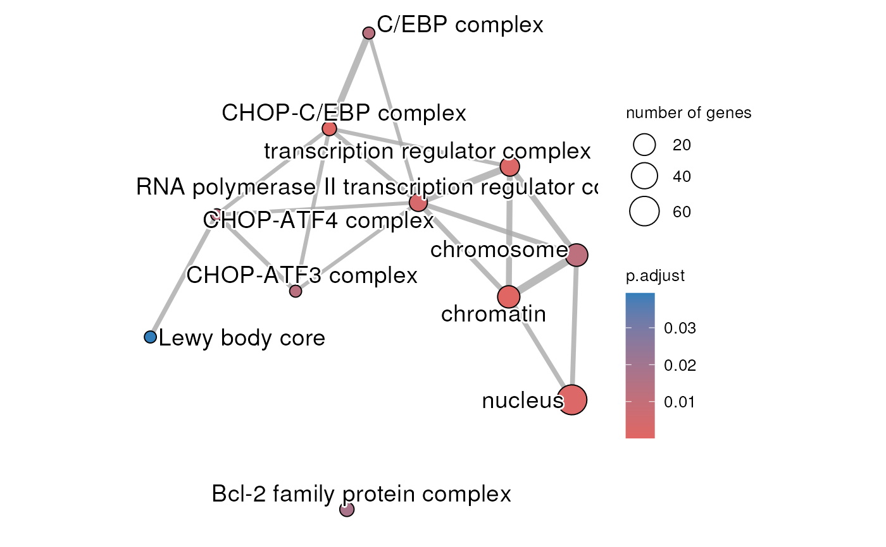

R/enrichViewNet.R
parentalNapaVsDMSOEnrichment.RdThe enrichment analysis was done with gprofile2 package (Kolberg L et al 2020) with database version 'e109_eg56_p17_1d3191d' and g:SCS multiple testing correction method applying significance threshold of 0.05 (Raudvere U et al 2019). All tested genes were used as background.
data(parentalNapaVsDMSOEnrichment)a list created by gprofiler2 that contains the results
from the enrichment analysis:
"result": a data.frame with the significantly
enriched terms
"meta": a list with the meta-data information
The original RNA-sequencing data is available at the Gene Expression Omnibus (GEO) under the accession number GSE135352.
a list containing 2 entries:
"result": a data.frame with the significantly
enriched terms
"meta": a list with the meta-data information
The object is a named list with 2 entries. The 'result' entry
contains a data.frame with the enrichment analysis results and
the 'meta' entry contains metadata information.
The dataset used for the enrichment analysis is associated to this publication:
Froeling F.E.M. et al.Bioactivation of Napabucasin Triggers Reactive Oxygen Species–Mediated Cancer Cell Death. Clin Cancer Res 1 December 2019; 25 (23): 7162–7174
The enrichment analysis has been done with gprofile2 package (Kolberg L et al 2020) with database version 'e109_eg56_p17_1d3191d' and g:SCS multiple testing correction method applying significance threshold of 0.05 (Raudvere U et al 2019). All tested genes were used as background.
createNetwork for transforming functional enrichment results from gprofiler2 into a Cytoscape network
createEnrichMap for transforming functional enrichment results from gprofiler2 into an enrichment map
## Loading dataset containing the results of the enrichment analysis
## done on a differentially expressed
## analysis between 2-hour treatment with 0.5 uM napabucasin and
## DMSO vehicle control parental MiaPaCa2 cells
data(parentalNapaVsDMSOEnrichment)
## Create an enrichment map for the GO:CC terms
createEnrichMap(gostObject=parentalNapaVsDMSOEnrichment,
query="parental_napa_vs_DMSO", source="GO:CC")
